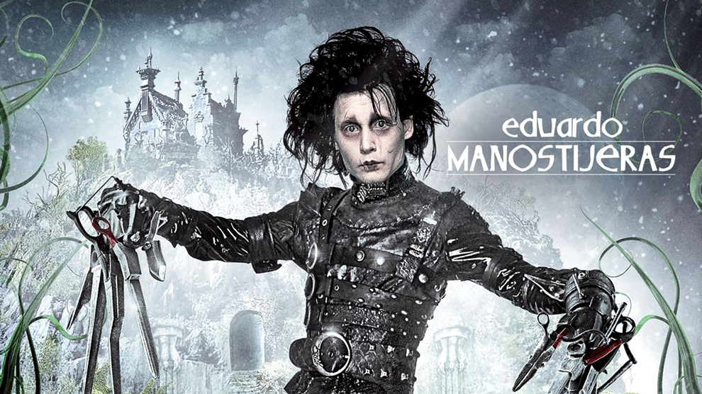
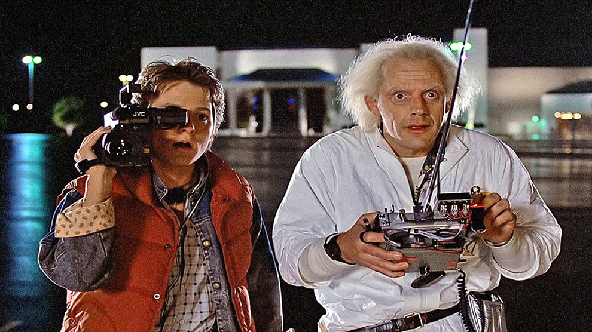
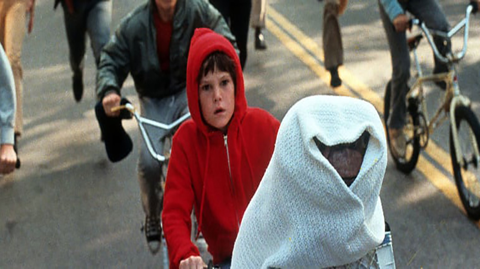
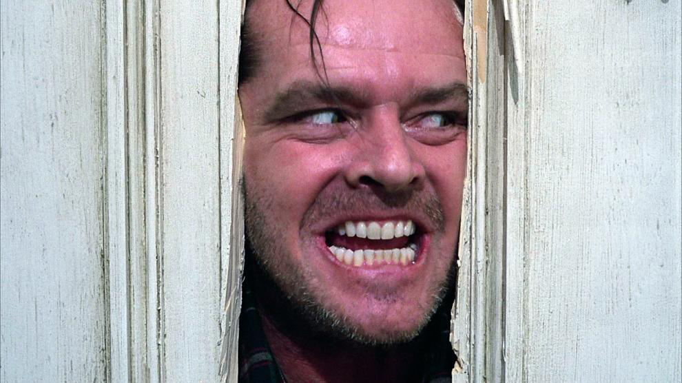
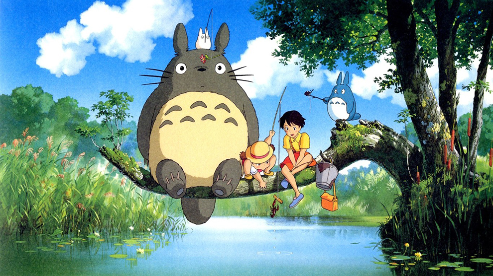
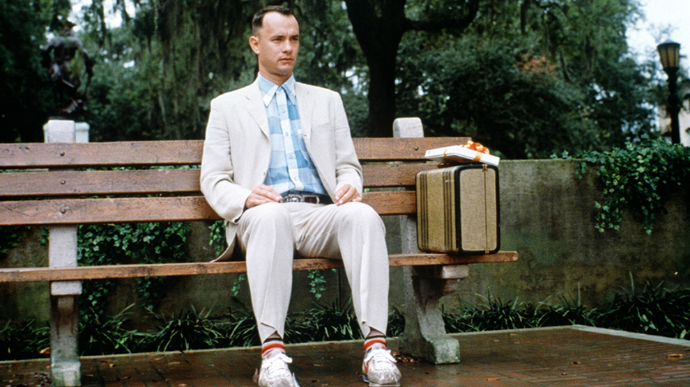

6 de Juliol
1990. Tim Burton.
Un inventor solitari crea Edward, un home artificial amb fulles en lloc de mans, però mor abans d'acabar-lo, deixant-lo sol a la foscor.
13 de Juliol
1995. Robert Zemeckis.
Marty McFly, juntament amb el seu amic científic Doc, viatja per accident el 1955 en una màquina del temps, on assegureu-vos que els seus pares es coneguin i s'enamorin per salvar la seva pròpia existència.
20 de Juliol
1982. Steven Spilberg.
Un nen fa amistat amb un extraterrestre anomenat E.T. Junts, intenten escapar de l'agència governamental i enviar-lo de tornada a casa abans que sigui capturat. En una emotiva despedida, E.T. torna al seu planeta, deixant una gran influència en el nen i la seva família.
27 de Juliol
1980. Stanly Kubrick.
Un escriptor anomenat Jack Torrance es muda amb la família a un hotel aïllat a la recerca d'inspiració, però mentre lluita amb el bloqueig creatiu, les visions psíquiques del seu fill s'intensifiquen.
3 d'Agost
1988. Hayao Miyazaki.
Una família japonesa es trasllada al camp. Les dues filles es troben amb un esperit anomenat Totoro, que habita al bosc. Amb ell, comparteixen màgiques aventures.
10 d'Agost
1985. Robert Zemeckis.
Forrest Gump, un jove amb retard mental, relata la seva extraordinària vida mentre espera en un banc a Savannah, Geòrgia, participant inconscientment en importants esdeveniments històrics dels Estats Units.